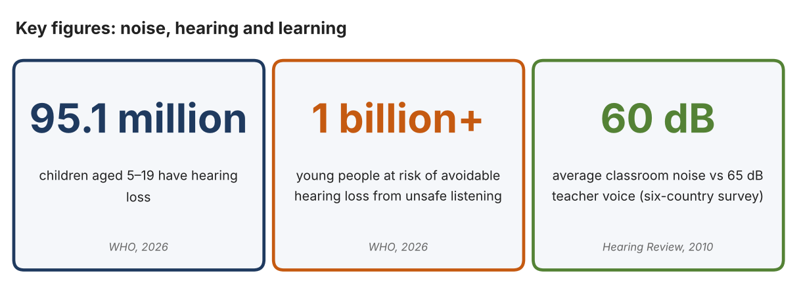
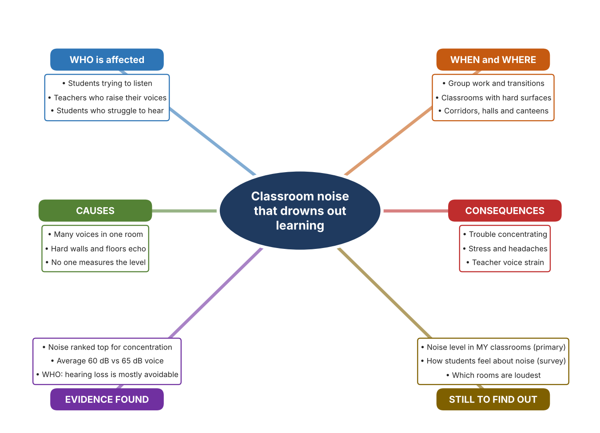
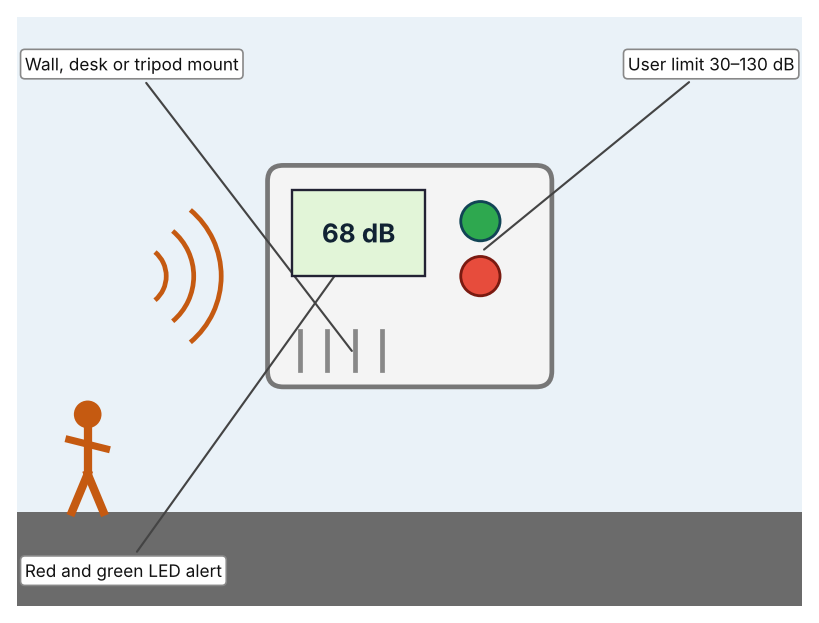
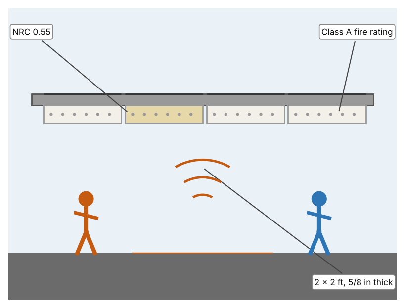
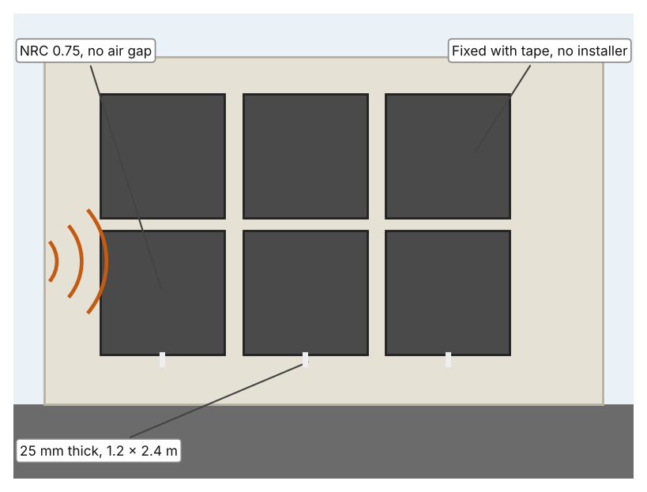

A1 · Design need
Identify and explain the problem faced by your client and community.
My client is the Teaching and Learning Team of a Dubai school, represented by the Deputy Head for Learning. Teachers have told the team that some lessons are hard to run because the room becomes loud when students work in groups, and students say they cannot hear instructions. The team needs the noise in classrooms to be known and kept at a level that supports listening and learning.
The people most affected are students, because they must hear and understand speech to learn. Teachers are a second group, because raising their voices all day is tiring. Parents are a third group, because they hear about the stress and headaches that follow noisy days.
The need is real because noise affects learning and hearing. A survey of about 500 schoolchildren in six countries rated noise 6.5 out of 10 as a reason for trouble concentrating, and found average classroom noise of 60 dB against a teacher's voice of 65 dB (“Hear the World Survey”). The World Health Organization reports 95.1 million children aged 5 to 19 with hearing loss, and says nearly 60% of hearing loss in children has avoidable causes (World Health Organization). The WHO figures concern hearing loss in general, not classroom noise. I did not find measured noise levels for UAE classrooms, only an acoustics company stating that UAE education authorities increasingly refer to acoustic performance (Akinco), so I need to measure my own school.
Figure 1 summarises the key numbers. The 2010 survey is old and not from the UAE, and the WHO figures describe hearing in general, so I treat them as a pattern and not as proof about my classrooms. In my own words: noise is not usually dangerous in a single lesson, but it makes every lesson a little harder. Figure 2 is my mind map of the problem.
305 words


A2 · Research plan
Six research questions of different types, each with a priority, a research type and evidence.
| # | Question | Priority | Primary / secondary | Evidence | Brief answer |
|---|---|---|---|---|---|
| 1 | Factual: How many children have hearing loss, and how much of it can be avoided? | High | Secondary | WHO, 2026 (Appendix A, Source 1) | 95.1 million children aged 5–19 have hearing loss; nearly 60% of hearing loss in children has avoidable causes; over a billion young adults are at risk from unsafe listening. |
| 2 | Factual: How does noise affect schoolchildren in class, and how loud are classrooms? | High | Secondary | Hearing Review, 2010 (Appendix A, Source 2) | About 500 children rated noise 6.5 out of 10 as a reason for trouble concentrating (stress 5.4, headaches 5.1); average classroom noise was 60 dB against a 65 dB teacher voice. |
| 3 | Conceptual: What is a decibel, and what noise level is recommended for teaching spaces? | Medium | Secondary | Akinco, 2026 (Source 3); Extech page (Source 4) | Sound level is measured in dB. The UK standard BB93 sets about 35 dB(A) as typical maximum background noise for teaching spaces; a sound-level meter can show a classroom reading and alert above a set limit. |
| 4 | Debatable: Should schools handle noise by monitoring it, by absorbing sound, or by changing how lessons are run? | Medium | Secondary | Appendix A, Sources 4, 5 and 6 | A monitor shows when noise is too high but does not lower it; absorbing panels reduce echo but cost money; lesson changes are cheap but depend on people. My view: show the level, then act. |
| 5 | Debatable (challenges my assumption, UAE source): UAE schools already meet acoustic standards, so classroom noise is not a problem worth investigating. | High | Secondary | Akinco, 2026 (Source 3); Hearing Review, 2010 (Source 2) | The UAE source says authorities increasingly refer to acoustic performance but gives no figures and no measured UAE classroom data. Surveyed classrooms elsewhere averaged 60 dB, well above 35 dB, so I must measure my own school. |
| 6 | Factual (primary): How loud are our classrooms during different activities, and how do students feel about the noise? | High | Primary | Own sound-level log and student survey (Appendix A, Sources 7 and 8) | [Student data needed: write the dB readings (with the activity) and survey averages, then two sentences on the pattern you see.] |
A3 · Existing products
Three significantly different products, each analysed with ACCESS FM, with pros and cons.
Product 1: Classroom sound-level alert (Extech SL130G)

Illustration by the author based on the Extech SL130G page, Extech (Appendix A, Source 4). The page shows this model as discontinued. [Student: replace with a photo from the source, cited MLA 9]
Product 2: Acoustic ceiling tile (USG Radar Education)

Illustration by the author based on the USG Radar Education panel page, USG (Appendix A, Source 5). [Student: replace with a photo from the source, cited MLA 9]
Product 3: Adhesive absorbing panel (Stratocell Whisper)

Illustration by the author based on the Whisper Classroom brochure, Sealed Air (Appendix A, Source 6). [Student: replace with a photo from the source, cited MLA 9]
ACCESS FM analysis
| ACCESS FM | Product 1 | Product 2 | Product 3 |
|---|---|---|---|
| Aesthetics | Wall-style unit with red and green lights; 22 × 18 × 3.2 cm (Extech). | Plain white ceiling tile pattern, light reflectance 0.84 (USG). | Charcoal or white fibre-free panels (Sealed Air). |
| Cost | Price not shown; discontinued, replaced by the SL130W (Extech). | Price not shown (USG). | Price not shown (Sealed Air). |
| Customer | Teachers who want a visible noise alert. | Schools fitting or renovating ceilings. | Rooms where tile ceilings cannot be changed; no specialist installer needed. |
| Environment | Uses 8 AA batteries or an AC adapter. | 30-year warranty against sag, mould and mildew; 38% average recycled content. | Fibre-free, moisture-resistant and does not support mould; recyclable in New Zealand. |
| Size | 285 g; 22 × 18 × 3.2 cm. | 2 × 2 ft panels, 5/8 in thick (a 2 × 4 ft option exists). | 25 mm thick; 1.2 × 2.4 m sheets; 650 g per m². |
| Safety | Not stated. | Class A fire rating (flame spread 25 or less). | Fire retardant: Class B s1 d0; low VOC and no formaldehyde. |
| Function | Ranges 30–80, 60–110 and 80–130 dB with 0.1 dB resolution; ANSI Type 2; alerts when the set limit is passed. | Absorbs sound: NRC 0.55 and CAC 35. | Absorbs sound: NRC 0.75, reducing reverberation and noise. |
| Materials | Not stated. | Not stated beyond the panel and Class A rating. | Not stated beyond the fibre-free, washable material. |
Pros and cons
| Product 1 | Product 2 | Product 3 | |
|---|---|---|---|
| Pro | Shows noise level immediately and alerts students with a light. | Quiet, durable and fire-rated, and reduces echo across a whole room. | Higher NRC than the tile and fixed easily by the school. |
| Con | Does not reduce noise, and the page shows the model as discontinued. | Cannot warn anyone, and installation means changing the ceiling. | Does not warn anyone, and the figures come from the maker. |
A4 · Design brief
Restate the need, summarise the research and the existing products, and state the design intent.
My client, the Teaching and Learning Team of a Dubai school, needs classroom noise to be known and kept at a level that supports learning. The problem is real: a survey of about 500 schoolchildren found noise ranked 6.5 out of 10 as a reason for trouble concentrating, with average classroom noise of 60 dB against a teacher's voice of 65 dB (Appendix A, Source 2). The WHO reports 95.1 million children with hearing loss, nearly 60% of it avoidable (Appendix A, Source 1).
My research shows that noise affects concentration, stress and teachers' voices, but I found no measured UAE classroom data (Appendix A, Sources 2 and 3). The UK standard I found names about 35 dB(A) for teaching spaces (Appendix A, Source 3). My debatable questions led me to decide that monitoring, absorbing and changing lessons each cover only part of the problem, and my challenged assumption (that UAE schools already meet acoustic standards) showed me that I cannot assume this without data. I will gather my own evidence with the sound-level log and the survey, always with permission (Appendix A, Sources 7 and 8).
I analysed three very different existing solutions. A classroom sound-level alert shows noise with red and green lights, but it does not reduce noise and the model is discontinued (Appendix A, Source 4). A ceiling tile absorbs sound with NRC 0.55 and a Class A fire rating, but it cannot warn anyone and needs a ceiling change (Appendix A, Source 5). An adhesive absorbing panel has an NRC of 0.75 and is fixed with tape, but the figures come from the maker (Appendix A, Source 6). They give me three ideas for inspiration: showing the level, absorbing sound in the ceiling, and absorbing sound on the walls. Each has a weakness that another covers.
My design intent is therefore to create a solution that measures classroom noise and shows students and teachers clearly when it is too loud. It must be affordable, simple to understand at a glance, safe in a classroom, and reliable through the school day. I have deliberately not fixed what form it will take. That decision will be made in Criterion B, after I analyse my own log and survey against the evidence in Appendix A.
377 words
Appendix A · Research notes and sources
Secondary sources in MLA 9, with notes and where each source is used.
| # | Source (MLA 9) | Key notes | Used in |
|---|---|---|---|
| 1 | World Health Organization. “Deafness and Hearing Loss.” WHO, 3 Mar. 2026, www.who.int/news-room/fact-sheets/detail/deafness-and-hearing-loss. Accessed 21 Oct. 2026. | Nearly 2.5 billion projected with some hearing loss by 2050; 95.1 million children aged 5–19 with hearing loss; over 1 billion young adults at risk from unsafe listening; nearly 60% of hearing loss in children has avoidable causes. | A1; A2 Q1; A4. |
| 2 | “Hear the World Survey Reveals Underestimated Impact of Noise in the Classroom.” Hearing Review, 16 Sept. 2010, www.hearingreview.com/inside-hearing/people/hear-the-world-survey-reveals-underestimated-impact-of-noise-in-the-classroom. Accessed 21 Oct. 2026. | About 500 schoolchildren in the US, Germany, France, Italy, the UK and Switzerland; noise 6.5/10 for trouble concentrating, stress 5.4, headaches 5.1; average noise 60 dB vs 65 dB voice. Source is from 2010 and not from the UAE. | A1; A2 Q2 and Q5; A4. |
| 3 | akadmin. “Acoustic Design for Schools & Universities in UAE: Classroom Standards.” Akinco, 6 June 2026, akinco.ae/acoustic-design-schools-universities-uae-classroom-standards/. Accessed 21 Oct. 2026. | UK BB93 typical 35 dB(A) for teaching spaces; ISO 3382-2 for reverberation time; ADEK and KHDA increasingly reference acoustic performance (no numbers); no measured UAE data. Written by an acoustics company, so it may promote its services. | A1; A2 Q3 and Q5; A4. |
| 4 | “SL130G Sound Level Alert.” Extech, www.extech.com/products/sl130g/. Accessed 21 Oct. 2026. | Ranges 30–80, 60–110, 80–130 dB; user limit 30–130 dB; ANSI Type 2; red/green LED alert; 8 AA or AC adapter; 22 × 18 × 3.2 cm, 285 g; discontinued (replacement SL130W). | A2 Q3 and Q4; A3 Product 1; A4. |
| 5 | “Radar Education Acoustical Panels (Item 2227).” USG, www.usg.com/en-US/p/product/radar-education-acoustical-panels-2227. Accessed 21 Oct. 2026. | NRC 0.55; CAC 35; 2 × 2 ft; 5/8 in; Class A fire; 30-year warranty; 38% recycled content; light reflectance 0.84. | A2 Q4; A3 Product 2; A4. |
| 6 | “Whisper Classroom.” Sealed Air, pages.sealedair.com/rs/729-WHA-730/images/Whisper%20Classroom%20Brochure.pdf. Accessed 21 Oct. 2026. | Stratocell Whisper: NRC 0.75, 25 mm, 1.2 × 2.4 m, 650 g/m²; tape fixing; fibre-free; Class B s1 d0; claims by the manufacturer. | A2 Q4; A3 Product 3; A4. |
| 7 | Primary: classroom noise log, completed by the student on [date]. Accessed own data. | [Student: summarise your counts.] | A2 primary question; A4. |
| 8 | Primary: survey of [number] people, completed on [date]. | [Student: summarise your averages.] | A2 primary question; A4. |
Primary research instrument 1: classroom noise log
Student records sound levels with a phone sound-meter app or a sound-level meter, with permission and a teacher present.
| Room | Activity | Time | Level (dB) | Students can hear teacher (Y/N) | Notes |
|---|---|---|---|---|---|
| Classroom A | |||||
| Classroom B | |||||
| Corridor | |||||
| Canteen |
Primary research instrument 2: survey
Rate each statement from 1 (strongly disagree) to 5 (strongly agree). Collect responses with permission and record no names.
| Statement | 1 | 2 | 3 | 4 | 5 | Total responses |
|---|---|---|---|---|---|---|
| It is hard to hear the teacher in my classroom. | ||||||
| Noise makes it difficult for me to concentrate. | ||||||
| Noise gives me a headache or makes me tired. | ||||||
| I would change my behaviour if I could see the noise level. |